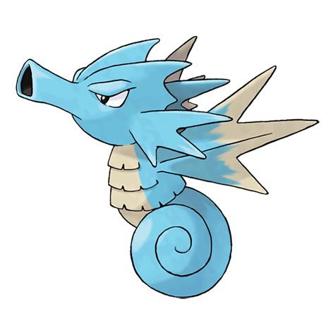

Назад
Сидра

Сидра — Покемон 1 поколения под номером 117 в Покедекс. Обитает он в регионе Kanto и относится к Водному типу. Сидра спит, извиваясь между ветвями коралла. Те, кто пытается собирать кораллы, иногда бывают ужалены ядовитыми шипами этого Покемона, если не замечают его
Тип:
Водяной
Эволюция
# 117 Сидра